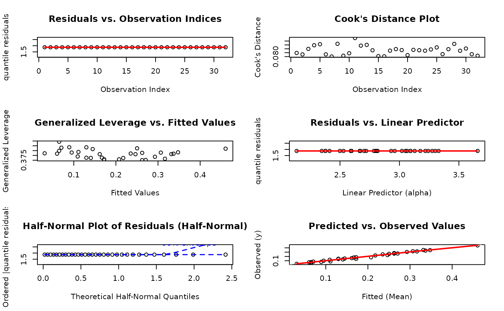
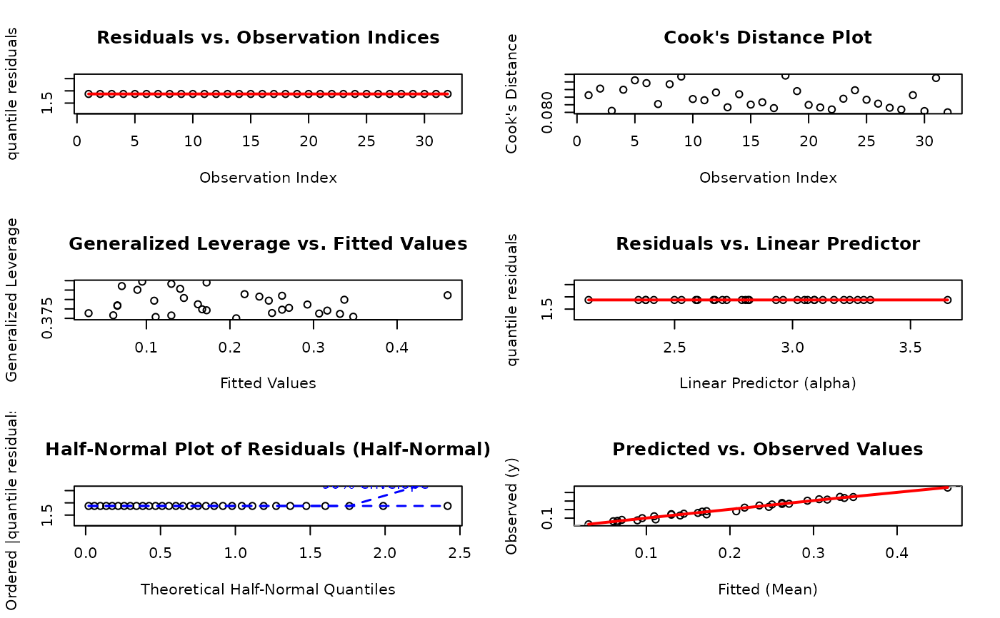

Fits regression models for response variables strictly bounded in the (0, 1) interval using the Generalized Kumaraswamy (GKw) family of distributions. It provides a unified interface for fitting the GKw and six nested submodels, allowing flexible regression on multiple distribution parameters.
Usage
gkwreg(
formula,
data,
family = c("gkw", "bkw", "kkw", "ekw", "mc", "kw", "beta"),
link = NULL,
link_scale = NULL,
subset = NULL,
weights = NULL,
offset = NULL,
na.action = getOption("na.action"),
contrasts = NULL,
control = gkw_control(),
model = TRUE,
x = FALSE,
y = TRUE,
...
)Arguments
- formula
An object of class
Formula. The formula uses extended syntax to specify different linear predictors for each parameter:y ~ model_alpha | model_beta | model_gamma | model_delta | model_lambdayThe response variable, which must be in the (0, 1) interval.
model_alphaPredictors for the \(\alpha\) parameter.
model_betaPredictors for the \(\beta\) parameter.
model_gammaPredictors for the \(\gamma\) parameter.
model_deltaPredictors for the \(\delta\) parameter.
model_lambdaPredictors for the \(\lambda\) parameter.
See Details for examples.
- data
A data frame containing the variables specified in
formula.- family
A character string specifying the distribution family. Must be one of:
"gkw"Generalized Kumaraswamy (default). Parameters: \(\alpha, \beta, \gamma, \delta, \lambda\).
"bkw"Beta-Kumaraswamy. Parameters: \(\alpha, \beta, \gamma, \delta\) (fixes \(\lambda = 1\)).
"kkw"Kumaraswamy-Kumaraswamy. Parameters: \(\alpha, \beta, \delta, \lambda\) (fixes \(\gamma = 1\)).
"ekw"Exponentiated Kumaraswamy. Parameters: \(\alpha, \beta, \lambda\) (fixes \(\gamma = 1, \delta = 0\)).
"mc"McDonald (Beta Power). Parameters: \(\gamma, \delta, \lambda\) (fixes \(\alpha = 1, \beta = 1\)).
"kw"Kumaraswamy. Parameters: \(\alpha, \beta\) (fixes \(\gamma = 1, \delta = 0, \lambda = 1\)).
"beta"Beta distribution. Parameters: \(\gamma, \delta\) (fixes \(\alpha = 1, \beta = 1, \lambda = 1\)). Corresponds to
shape1 = \(\gamma\),shape2 = \(\delta\).
- link
Specifies the link function(s) for the distributional parameters. Can be a single character string (applied to all parameters) or a named list for parameter-specific links (e.g.,
link = list(alpha = "log", delta = "logit")).If
NULL(default), links are:"log"for \(\alpha, \beta, \gamma, \lambda\) and"logit"for \(\delta\).Available links:
"log"Log link, maps \((0, \infty) \to R\). Ensures positivity.
"logit"Logit link, maps \((0, 1) \to R\).
"probit"Probit link, maps \((0, 1) \to R\).
"cloglog"Complementary log-log link, maps \((0, 1) \to R\).
"cauchy"Cauchy link, maps \((0, 1) \to R\).
"identity"Identity link (no transformation). Use with caution as it does not enforce parameter constraints.
"sqrt"Square root link, maps \(x \to \sqrt{x}\).
"inverse"Inverse link, maps \(x \to 1/x\).
"inverse-square"Inverse squared link, maps \(x \to 1/x^2\).
- link_scale
Numeric scale factor(s) for link functions. Can be a single numeric value (applied to all) or a named list. Default is
NULL, which uses10for \(\alpha, \beta, \gamma, \lambda\) and1for \(\delta\). Smaller scales produce steeper response curves; larger scales produce more gradual ones.- subset
Optional vector specifying a subset of observations.
- weights
Optional numeric vector of prior weights. Currently experimental.
- offset
Optional vector or matrix specifying an a priori known component to be included in the linear predictor(s). Offsets are added before the link function is applied.
- na.action
A function specifying how to handle
NAs. Defaults togetOption("na.action"). Seena.omitandna.exclude.- contrasts
Optional list specifying contrasts for factor variables. See
contrastsandcontrasts.arginmodel.matrix.- control
A list of control parameters from
gkw_controlspecifying optimization details (e.g.,method,start,hessian,maxit). Seegkw_controlfor all options and defaults.- model
Logical (default
TRUE). IfTRUE, the model frame is returned as componentmodel.- x
Logical (default
FALSE). IfTRUE, the list of model matrices (one for each modeled parameter) is returned as componentx.- y
Logical (default
TRUE). IfTRUE, the response vector is returned as componenty.- ...
Arguments for backward compatibility (e.g.,
method,start,hessian,silent). These are deprecated and should be passed via thecontrolargument. Using them will trigger a warning.
Value
An object of class "gkwreg", a list containing:
Model Specification:
callThe matched function call.
formulaThe
Formulaobject used.familyThe distribution family used.
linkNamed list of link functions used.
link_scaleNamed list of link scale values.
controlThe
gkw_controlobject used.
Parameter Estimates:
coefficientsNamed vector of estimated regression coefficients (on the link scale).
fitted_parametersNamed list of mean parameter values (e.g., \(\alpha, \beta\)) averaged across observations.
parameter_vectorsNamed list of observation-specific parameter vectors (e.g.,
alphaVec,betaVec).
Fitted Values and Residuals:
fitted.valuesVector of fitted mean values \(E[Y|X]\).
residualsVector of response residuals (observed - fitted).
Inference: (Only if control$hessian = TRUE)
vcovVariance-covariance matrix of coefficients.
seVector of standard errors of coefficients.
Model Fit Statistics:
loglikMaximized log-likelihood.
aicAkaike Information Criterion.
bicBayesian Information Criterion.
devianceDeviance (-2 * loglik).
df.residualResidual degrees of freedom (nobs - npar).
nobsNumber of observations.
nparTotal number of estimated parameters.
Diagnostic Statistics:
rmseRoot Mean Squared Error.
efron_r2Efron's pseudo R-squared.
mean_absolute_errorMean Absolute Error.
Optimization Details:
convergenceLogical,
TRUEif converged.messageConvergence message from optimizer.
iterationsNumber of optimizer iterations.
Optional Components:
modelThe model frame (if
model = TRUE).xList of model matrices (if
x = TRUE).yThe response vector (if
y = TRUE).
Internal:
tmb_objectThe raw object from
MakeADFun.
Details
Estimation is performed via Maximum Likelihood using automatic differentiation
through the TMB (Template Model Builder) package for efficiency and accuracy.
The modeling interface uses Formula syntax, similar to
glm and betareg, allowing different
linear predictors for each distributional parameter.
Distribution Families
The family argument selects a distribution from the GKw hierarchy.
Simpler families ("beta", "kw") are often sufficient and
computationally faster. More complex families ("bkw", "gkw")
add flexibility but risk overfitting. Use AIC,
BIC, or anova.gkwreg to compare nested models.
Formula Specification
The extended formula syntax y ~ model_alpha | model_beta | ... allows
each parameter's linear predictor to be specified. Parameters are in the
order \(\alpha, \beta, \gamma, \delta, \lambda\).
If a part is omitted (e.g., y ~ model_alpha), the remaining parameters
are modeled as intercept-only. Parts corresponding to fixed parameters
(defined by family) are ignored.
# Kw family ("kw") parameters: alpha, beta
# alpha ~ x1 + x2, beta ~ x3
y ~ x1 + x2 | x3
# alpha ~ x1, beta ~ 1 (intercept only)
y ~ x1 | 1
# alpha ~ x1, beta ~ x1 (same formula for both)
y ~ x1Optimization and Convergence
Fitting is performed by optim or nlminb.
If convergence fails, consider:
Checking data for separation, outliers, or collinearity.
Rescaling predictors.
Trying a different optimizer, e.g.,
control = gkw_control(method = "BFGS").Simplifying the model (fewer predictors or a simpler
family).Providing starting values via
control = gkw_control(start = ...).
References
Generalized Kumaraswamy Distribution:
Cordeiro, G. M., & de Castro, M. (2011). A new family of generalized distributions. Journal of Statistical Computation and Simulation, 81(7), 883-898. doi:10.1080/00949650903530745
Kumaraswamy Distribution:
Kumaraswamy, P. (1980). A generalized probability density function for double-bounded random processes. Journal of Hydrology, 46(1-2), 79-88. doi:10.1016/0022-1694(80)90036-0
Jones, M. C. (2009). Kumaraswamy's distribution: A beta-type distribution with some tractability advantages. Statistical Methodology, 6(1), 70-81. doi:10.1016/j.stamet.2008.04.001
Beta Regression:
Ferrari, S. L. P., & Cribari-Neto, F. (2004). Beta regression for modelling rates and proportions. Journal of Applied Statistics, 31(7), 799-815. doi:10.1080/0266476042000214501
Template Model Builder (TMB):
Kristensen, K., Nielsen, A., Berg, C. W., Skaug, H., & Bell, B. M. (2016). TMB: Automatic Differentiation and Laplace Approximation. Journal of Statistical Software, 70(5), 1-21. doi:10.18637/jss.v070.i05
See also
Core Functions:
gkw_control for fitting options.
S3 Methods:
summary.gkwreg, print.gkwreg,
plot.gkwreg, predict.gkwreg,
residuals.gkwreg, coef.gkwreg,
vcov.gkwreg, logLik.gkwreg,
confint.gkwreg, anova.gkwreg
Examples
# \donttest{
# SECTION 1: Basic Usage - Getting Started
# Load packages and data
library(gkwreg)
library(gkwdist)
data(GasolineYield)
# Example 1.1: Simplest possible model (intercept-only, all defaults)
fit_basic <- gkwreg(yield ~ 1, data = GasolineYield, family = "kw")
summary(fit_basic)
#>
#> Generalized Kumaraswamy Regression Model Summary
#>
#> Family: kw
#>
#> Call:
#> gkwreg(formula = yield ~ 1, data = GasolineYield, family = "kw")
#>
#> Residuals:
#> Min Q1.25% Median Mean Q3.75% Max
#> -0.1688 -0.0803 -0.0188 -0.0002 0.0737 0.2602
#>
#> Coefficients:
#> Estimate Std. Error z value Pr(>|z|)
#> alpha:(Intercept) 0.6342 0.1538 4.124 3.73e-05 ***
#> beta:(Intercept) 2.7951 0.4319 6.472 9.68e-11 ***
#> ---
#> Signif. codes: 0 ‘***’ 0.001 ‘**’ 0.01 ‘*’ 0.05 ‘.’ 0.1 ‘ ’ 1
#>
#> Confidence intervals (95%):
#> 3% 98%
#> alpha:(Intercept) 0.3328 0.9356
#> beta:(Intercept) 1.9486 3.6416
#>
#> Link functions:
#> alpha: log
#> beta: log
#>
#> Fitted parameter means:
#> alpha: 1.886
#> beta: 16.35
#> gamma: 1
#> delta: 0
#> lambda: 1
#>
#> Model fit statistics:
#> Number of observations: 32
#> Number of parameters: 2
#> Residual degrees of freedom: 30
#> Log-likelihood: 28.51
#> AIC: -53.02
#> BIC: -50.09
#> RMSE: 0.1055
#> Efron's R2: -4.747e-06
#> Mean Absolute Error: 0.09088
#>
#> Convergence status: Successful
#> Iterations: 11
#>
# Example 1.2: Model with predictors (uses all defaults)
# Default: family = "gkw", method = "nlminb", hessian = TRUE
fit_default <- gkwreg(yield ~ batch + temp, data = GasolineYield)
summary(fit_default)
#>
#> Generalized Kumaraswamy Regression Model Summary
#>
#> Family: gkw
#>
#> Call:
#> gkwreg(formula = yield ~ batch + temp, data = GasolineYield)
#>
#> Residuals:
#> Min Q1.25% Median Mean Q3.75% Max
#> -0.0272 -0.0123 -0.0010 -0.0013 0.0079 0.0268
#>
#> Coefficients:
#> Estimate Std. Error z value Pr(>|z|)
#> alpha:(Intercept) -3.381e+00 7.662e-01 -4.413 1.02e-05 ***
#> alpha:batch1 9.204e-01 3.181e-02 28.930 < 2e-16 ***
#> alpha:batch2 6.787e-01 3.407e-02 19.922 < 2e-16 ***
#> alpha:batch3 7.832e-01 3.400e-02 23.039 < 2e-16 ***
#> alpha:batch4 5.598e-01 3.185e-02 17.573 < 2e-16 ***
#> alpha:batch5 5.632e-01 3.396e-02 16.582 < 2e-16 ***
#> alpha:batch6 5.419e-01 3.403e-02 15.923 < 2e-16 ***
#> alpha:batch7 3.113e-01 3.188e-02 9.767 < 2e-16 ***
#> alpha:batch8 2.549e-01 3.394e-02 7.510 5.91e-14 ***
#> alpha:batch9 1.990e-01 3.794e-02 5.246 1.55e-07 ***
#> alpha:temp 5.408e-03 1.456e-06 3715.029 < 2e-16 ***
#> beta:(Intercept) 2.622e+00 3.722e-01 7.043 1.88e-12 ***
#> gamma:(Intercept) 2.261e+01 1.831e+00 12.346 < 2e-16 ***
#> delta:(Intercept) -1.457e-01 1.217e+00 -0.120 0.905
#> lambda:(Intercept) -9.556e+00 4.202e+00 -2.274 0.023 *
#> ---
#> Signif. codes: 0 ‘***’ 0.001 ‘**’ 0.01 ‘*’ 0.05 ‘.’ 0.1 ‘ ’ 1
#>
#> Confidence intervals (95%):
#> 3% 98%
#> alpha:(Intercept) -4.8831 -1.8795
#> alpha:batch1 0.8581 0.9828
#> alpha:batch2 0.6120 0.7455
#> alpha:batch3 0.7166 0.8499
#> alpha:batch4 0.4973 0.6222
#> alpha:batch5 0.4966 0.6298
#> alpha:batch6 0.4752 0.6085
#> alpha:batch7 0.2488 0.3738
#> alpha:batch8 0.1884 0.3215
#> alpha:batch9 0.1247 0.2734
#> alpha:temp 0.0054 0.0054
#> beta:(Intercept) 1.8922 3.3513
#> gamma:(Intercept) 19.0207 26.1992
#> delta:(Intercept) -2.5311 2.2397
#> lambda:(Intercept) -17.7927 -1.3201
#>
#> Link functions:
#> alpha: log
#> beta: log
#> gamma: log
#> delta: logit
#> lambda: log
#>
#> Fitted parameter means:
#> alpha: 0.3603
#> beta: 13.76
#> gamma: 6.598e+09
#> delta: 4.636
#> lambda: 7.068e-05
#>
#> Model fit statistics:
#> Number of observations: 32
#> Number of parameters: 15
#> Residual degrees of freedom: 17
#> Log-likelihood: 96.5
#> AIC: -163
#> BIC: -141
#> RMSE: 0.01406
#> Efron's R2: 0.9822
#> Mean Absolute Error: 0.01129
#>
#> Convergence status: Failed
#> Iterations: 146
#>
# Example 1.3: Kumaraswamy model (two-parameter family)
# Default link functions: log for both alpha and beta
fit_kw <- gkwreg(yield ~ batch + temp, data = GasolineYield, family = "kw")
#> Warning: NaNs produced
summary(fit_kw)
#>
#> Generalized Kumaraswamy Regression Model Summary
#>
#> Family: kw
#>
#> Call:
#> gkwreg(formula = yield ~ batch + temp, data = GasolineYield,
#> family = "kw")
#>
#> Residuals:
#> Min Q1.25% Median Mean Q3.75% Max
#> -0.0307 -0.0074 0.0036 -0.0007 0.0086 0.0175
#>
#> Coefficients:
#> Estimate Std. Error z value Pr(>|z|)
#> alpha:(Intercept) 0.669333 0.028696 23.325 < 2e-16 ***
#> alpha:batch1 0.838133 0.026691 31.401 < 2e-16 ***
#> alpha:batch2 0.591261 0.028544 20.714 < 2e-16 ***
#> alpha:batch3 0.710279 0.028476 24.943 < 2e-16 ***
#> alpha:batch4 0.466760 0.026679 17.496 < 2e-16 ***
#> alpha:batch5 0.520279 0.028409 18.314 < 2e-16 ***
#> alpha:batch6 0.449768 0.028512 15.775 < 2e-16 ***
#> alpha:batch7 0.224772 0.026625 8.442 < 2e-16 ***
#> alpha:batch8 0.203167 0.028283 7.183 6.80e-13 ***
#> alpha:batch9 0.141873 0.031899 4.448 8.69e-06 ***
#> alpha:temp 0.005282 NaN NaN NaN
#> beta:(Intercept) 28.881137 0.430082 67.153 < 2e-16 ***
#> ---
#> Signif. codes: 0 ‘***’ 0.001 ‘**’ 0.01 ‘*’ 0.05 ‘.’ 0.1 ‘ ’ 1
#>
#> Confidence intervals (95%):
#> 3% 98%
#> alpha:(Intercept) 0.6131 0.7256
#> alpha:batch1 0.7858 0.8904
#> alpha:batch2 0.5353 0.6472
#> alpha:batch3 0.6545 0.7661
#> alpha:batch4 0.4145 0.5190
#> alpha:batch5 0.4646 0.5760
#> alpha:batch6 0.3939 0.5056
#> alpha:batch7 0.1726 0.2770
#> alpha:batch8 0.1477 0.2586
#> alpha:batch9 0.0794 0.2044
#> alpha:temp NaN NaN
#> beta:(Intercept) 28.0382 29.7241
#>
#> Link functions:
#> alpha: log
#> beta: log
#>
#> Fitted parameter means:
#> alpha: 18.47
#> beta: 3.487e+12
#> gamma: 1
#> delta: 0
#> lambda: 1
#>
#> Model fit statistics:
#> Number of observations: 32
#> Number of parameters: 12
#> Residual degrees of freedom: 20
#> Log-likelihood: 96.97
#> AIC: -169.9
#> BIC: -152.3
#> RMSE: 0.01292
#> Efron's R2: 0.985
#> Mean Absolute Error: 0.01068
#>
#> Convergence status: Failed
#> Iterations: 77
#>
plot(fit_kw, ask = FALSE, use_ggplot = TRUE, arrange_plots = TRUE)
#> Simulating envelope ( 100 iterations): .......... Done!
#> Warning: Removed 1 row containing missing values or values outside the scale range
#> (`geom_segment()`).

# Example 1.4: Beta model for comparison
# Default links: log for gamma and delta
fit_beta <- gkwreg(yield ~ batch + temp, data = GasolineYield, family = "beta")
#> using C++ compiler: ‘g++ (Ubuntu 13.3.0-6ubuntu2~24.04) 13.3.0’
# Compare models using AIC/BIC
AIC(fit_kw, fit_beta)
#> df AIC
#> fit_kw 12 -169.93865
#> fit_beta 12 -66.52315
BIC(fit_kw, fit_beta)
#> df BIC
#> fit_kw 12 -152.34982
#> fit_beta 12 -48.93432
# SECTION 2: Using gkw_control() for Customization
# Example 2.1: Change optimization method to BFGS
fit_bfgs <- gkwreg(
yield ~ batch + temp,
data = GasolineYield,
family = "kw",
control = gkw_control(method = "BFGS")
)
summary(fit_bfgs)
#>
#> Generalized Kumaraswamy Regression Model Summary
#>
#> Family: kw
#>
#> Call:
#> gkwreg(formula = yield ~ batch + temp, data = GasolineYield,
#> family = "kw", control = gkw_control(method = "BFGS"))
#>
#> Residuals:
#> Min Q1.25% Median Mean Q3.75% Max
#> -0.4270 -0.3404 -0.2601 -0.2400 -0.1571 0.0346
#>
#> Coefficients:
#> Estimate Std. Error z value Pr(>|z|)
#> alpha:(Intercept) -2.642e-06 1.244e+00 0.000 1.000
#> alpha:batch1 -1.481e-07 7.956e-01 0.000 1.000
#> alpha:batch2 -2.952e-07 7.610e-01 0.000 1.000
#> alpha:batch3 -2.558e-07 7.878e-01 0.000 1.000
#> alpha:batch4 -3.067e-07 6.980e-01 0.000 1.000
#> alpha:batch5 -1.339e-07 7.555e-01 0.000 1.000
#> alpha:batch6 -1.890e-07 7.388e-01 0.000 1.000
#> alpha:batch7 -5.561e-07 6.586e-01 0.000 1.000
#> alpha:batch8 -2.938e-07 6.854e-01 0.000 1.000
#> alpha:batch9 -1.461e-07 7.854e-01 0.000 1.000
#> alpha:temp -7.717e-04 3.133e-03 -0.246 0.805
#> beta:(Intercept) 2.530e-06 5.131e-01 0.000 1.000
#>
#> Confidence intervals (95%):
#> 3% 98%
#> alpha:(Intercept) -2.4382 2.4382
#> alpha:batch1 -1.5593 1.5593
#> alpha:batch2 -1.4916 1.4916
#> alpha:batch3 -1.5441 1.5441
#> alpha:batch4 -1.3680 1.3680
#> alpha:batch5 -1.4808 1.4808
#> alpha:batch6 -1.4479 1.4479
#> alpha:batch7 -1.2908 1.2908
#> alpha:batch8 -1.3433 1.3433
#> alpha:batch9 -1.5394 1.5394
#> alpha:temp -0.0069 0.0054
#> beta:(Intercept) -1.0057 1.0057
#>
#> Link functions:
#> alpha: log
#> beta: log
#>
#> Fitted parameter means:
#> alpha: 0.775
#> beta: 0.999
#> gamma: 1
#> delta: 0
#> lambda: 1
#>
#> Model fit statistics:
#> Number of observations: 32
#> Number of parameters: 12
#> Residual degrees of freedom: 20
#> Log-likelihood: 4.18
#> AIC: 15.64
#> BIC: 33.23
#> RMSE: 0.2662
#> Efron's R2: -5.362
#> Mean Absolute Error: 0.2422
#>
#> Convergence status: Successful
#> Iterations: 12
#>
# Example 2.3: Fast fitting without standard errors
# Useful for model exploration or large datasets
fit_fast <- gkwreg(
yield ~ batch + temp,
data = GasolineYield,
family = "kw",
control = gkw_control(hessian = FALSE)
)
# Note: Cannot compute confint() without hessian
coef(fit_fast) # Point estimates still available
#> alpha:(Intercept) alpha:batch1 alpha:batch2 alpha:batch3
#> 0.669333319 0.838133049 0.591261201 0.710278918
#> alpha:batch4 alpha:batch5 alpha:batch6 alpha:batch7
#> 0.466759877 0.520279363 0.449767828 0.224771574
#> alpha:batch8 alpha:batch9 alpha:temp beta:(Intercept)
#> 0.203167110 0.141873137 0.005282497 28.881137258
# SECTION 3: Advanced Formula Specifications
# Example 3.1: Different predictors for different parameters
# alpha depends on batch, beta depends on temp
fit_diff <- gkwreg(
yield ~ batch | temp,
data = GasolineYield,
family = "kw"
)
summary(fit_diff)
#>
#> Generalized Kumaraswamy Regression Model Summary
#>
#> Family: kw
#>
#> Call:
#> gkwreg(formula = yield ~ batch | temp, data = GasolineYield,
#> family = "kw")
#>
#> Residuals:
#> Min Q1.25% Median Mean Q3.75% Max
#> -0.0989 -0.0233 0.0005 -0.0108 0.0118 0.0214
#>
#> Coefficients:
#> Estimate Std. Error z value Pr(>|z|)
#> alpha:(Intercept) 1.88013 0.12809 14.678 < 2e-16 ***
#> alpha:batch1 0.86260 0.05709 15.109 < 2e-16 ***
#> alpha:batch2 0.60776 0.05797 10.484 < 2e-16 ***
#> alpha:batch3 0.75706 0.05723 13.229 < 2e-16 ***
#> alpha:batch4 0.51423 0.05689 9.039 < 2e-16 ***
#> alpha:batch5 0.51897 0.06013 8.631 < 2e-16 ***
#> alpha:batch6 0.49736 0.05944 8.368 < 2e-16 ***
#> alpha:batch7 0.25282 0.05727 4.414 1.01e-05 ***
#> alpha:batch8 0.20432 0.06025 3.391 0.000695 ***
#> alpha:batch9 0.20744 0.06828 3.038 0.002381 **
#> beta:(Intercept) 51.66408 6.11692 8.446 < 2e-16 ***
#> beta:temp -0.10073 0.01231 -8.181 2.82e-16 ***
#> ---
#> Signif. codes: 0 ‘***’ 0.001 ‘**’ 0.01 ‘*’ 0.05 ‘.’ 0.1 ‘ ’ 1
#>
#> Confidence intervals (95%):
#> 3% 98%
#> alpha:(Intercept) 1.6291 2.1312
#> alpha:batch1 0.7507 0.9745
#> alpha:batch2 0.4941 0.7214
#> alpha:batch3 0.6449 0.8692
#> alpha:batch4 0.4027 0.6257
#> alpha:batch5 0.4011 0.6368
#> alpha:batch6 0.3809 0.6139
#> alpha:batch7 0.1406 0.3651
#> alpha:batch8 0.0862 0.3224
#> alpha:batch9 0.0736 0.3413
#> beta:(Intercept) 39.6751 63.6530
#> beta:temp -0.1249 -0.0766
#>
#> Link functions:
#> alpha: log
#> beta: log
#>
#> Fitted parameter means:
#> alpha: 10.72
#> beta: 1.393e+12
#> gamma: 1
#> delta: 0
#> lambda: 1
#>
#> Model fit statistics:
#> Number of observations: 32
#> Number of parameters: 12
#> Residual degrees of freedom: 20
#> Log-likelihood: 80.5
#> AIC: -137
#> BIC: -119.4
#> RMSE: 0.0345
#> Efron's R2: 0.8931
#> Mean Absolute Error: 0.02294
#>
#> Convergence status: Failed
#> Iterations: 59
#>
# Example 3.2: Intercept-only for one parameter
# alpha varies with predictors, beta is constant
fit_partial <- gkwreg(
yield ~ batch + temp | 1,
data = GasolineYield,
family = "kw"
)
#> Warning: NaNs produced
# Example 3.3: Complex model with interactions
fit_interact <- gkwreg(
yield ~ batch * temp | temp + I(temp^2),
data = GasolineYield,
family = "kw"
)
# SECTION 4: Working with Different Families
# Example 4.1: Fit multiple families and compare
families <- c("beta", "kw", "ekw", "bkw", "gkw")
fits <- lapply(families, function(fam) {
gkwreg(yield ~ batch + temp, data = GasolineYield, family = fam)
})
#> Warning: NaNs produced
#> Warning: NaNs produced
#> using C++ compiler: ‘g++ (Ubuntu 13.3.0-6ubuntu2~24.04) 13.3.0’
#> Warning: NaNs produced
names(fits) <- families
# Compare via information criteria
comparison <- data.frame(
Family = families,
LogLik = sapply(fits, logLik),
AIC = sapply(fits, AIC),
BIC = sapply(fits, BIC),
npar = sapply(fits, function(x) x$npar)
)
print(comparison)
#> Family LogLik AIC BIC npar
#> beta beta 45.26157 -66.52315 -48.93432 12
#> kw kw 96.96932 -169.93865 -152.34982 12
#> ekw ekw 97.31460 -168.62921 -149.57464 13
#> bkw bkw 96.44294 -164.88587 -144.36557 14
#> gkw gkw 96.49831 -162.99661 -141.01058 15
# Example 4.2: Formal nested model testing
fit_kw <- gkwreg(yield ~ batch + temp, GasolineYield, family = "kw")
#> Warning: NaNs produced
fit_ekw <- gkwreg(yield ~ batch + temp, GasolineYield, family = "ekw")
#> Warning: NaNs produced
fit_gkw <- gkwreg(yield ~ batch + temp, GasolineYield, family = "gkw")
anova(fit_kw, fit_ekw, fit_gkw)
#> Warning: negative deviance change detected; models may not be nested
#> Analysis of Deviance Table
#>
#> Model 1: yield ~ batch + temp
#> Model 2: yield ~ batch + temp
#> Model 3: yield ~ batch + temp
#>
#> Resid. Df Resid. Dev Df Deviance Pr(>Chi)
#> fit_kw 20.00000 -193.93865
#> fit_ekw 19.00000 -194.62921 1 0.69056 0.40597
#> fit_gkw 17.00000 -192.99661 2 -1.63259
#> ---
#> Signif. codes: 0 '***' 0.001 '**' 0.01 '*' 0.05 '.' 0.1 ' ' 1
# SECTION 5: Link Functions and Scales
# Example 5.1: Custom link functions
fit_links <- gkwreg(
yield ~ batch + temp,
data = GasolineYield,
family = "kw",
link = list(alpha = "sqrt", beta = "log")
)
# Example 5.2: Custom link scales
# Smaller scale = steeper response curve
fit_scale <- gkwreg(
yield ~ batch + temp,
data = GasolineYield,
family = "kw",
link_scale = list(alpha = 5, beta = 15)
)
#> Warning: NaNs produced
# SECTION 6: Prediction and Inference
# Fit model for prediction examples
fit <- gkwreg(yield ~ batch + temp, GasolineYield, family = "kw")
#> Warning: NaNs produced
# Example 6.1: Confidence intervals
confint(fit, level = 0.95) # 95% CI
#> Warning: some standard errors are NA or infinite; intervals may be unreliable
#> 2.5 % 97.5 %
#> alpha:(Intercept) 0.61309049 0.7255762
#> alpha:batch1 0.78581980 0.8904463
#> alpha:batch2 0.53531608 0.6472063
#> alpha:batch3 0.65446611 0.7660917
#> alpha:batch4 0.41447097 0.5190488
#> alpha:batch5 0.46459924 0.5759595
#> alpha:batch6 0.39388604 0.5056496
#> alpha:batch7 0.17258723 0.2769559
#> alpha:batch8 0.14773407 0.2586001
#> alpha:batch9 0.07935147 0.2043948
#> alpha:temp NaN NaN
#> beta:(Intercept) 28.03819235 29.7240822
# SECTION 7: Diagnostic Plots and Model Checking
fit <- gkwreg(yield ~ batch + temp, GasolineYield, family = "kw")
#> Warning: NaNs produced
# Example 7.1: All diagnostic plots (default)
plot(fit, ask = FALSE, use_ggplot = TRUE, arrange_plots = TRUE)
#> Simulating envelope ( 100 iterations): .......... Done!
#> Warning: Removed 1 row containing missing values or values outside the scale range
#> (`geom_segment()`).

# Example 7.2: Select specific plots
plot(fit, which = c(2, 4, 5), use_ggplot = TRUE, arrange_plots = TRUE)
#> Simulating envelope ( 100 iterations): .......... Done!
#> Warning: Removed 1 row containing missing values or values outside the scale range
#> (`geom_segment()`).
 # SECTION 8: Real Data Example - Food Expenditure
# Load and prepare data
data(FoodExpenditure, package = "betareg")
food_data <- FoodExpenditure
food_data$prop <- food_data$food / food_data$income
# Example 8.1: Basic model
fit_food <- gkwreg(
prop ~ persons | income,
data = food_data,
family = "kw"
)
summary(fit_food)
#>
#> Generalized Kumaraswamy Regression Model Summary
#>
#> Family: kw
#>
#> Call:
#> gkwreg(formula = prop ~ persons | income, data = food_data, family = "kw")
#>
#> Residuals:
#> Min Q1.25% Median Mean Q3.75% Max
#> -0.1668 -0.0417 0.0098 -0.0047 0.0396 0.1527
#>
#> Coefficients:
#> Estimate Std. Error z value Pr(>|z|)
#> alpha:(Intercept) 1.26876 0.14206 8.931 < 2e-16 ***
#> alpha:persons 0.07210 0.01895 3.805 0.000142 ***
#> beta:(Intercept) 3.21312 0.63879 5.030 4.9e-07 ***
#> beta:income 0.03623 0.00922 3.930 8.5e-05 ***
#> ---
#> Signif. codes: 0 ‘***’ 0.001 ‘**’ 0.01 ‘*’ 0.05 ‘.’ 0.1 ‘ ’ 1
#>
#> Confidence intervals (95%):
#> 3% 98%
#> alpha:(Intercept) 0.9903 1.5472
#> alpha:persons 0.0350 0.1092
#> beta:(Intercept) 1.9611 4.4651
#> beta:income 0.0182 0.0543
#>
#> Link functions:
#> alpha: log
#> beta: log
#>
#> Fitted parameter means:
#> alpha: 4.638
#> beta: 244.4
#> gamma: 1
#> delta: 0
#> lambda: 1
#>
#> Model fit statistics:
#> Number of observations: 38
#> Number of parameters: 4
#> Residual degrees of freedom: 34
#> Log-likelihood: 46.34
#> AIC: -84.69
#> BIC: -78.14
#> RMSE: 0.07442
#> Efron's R2: 0.4465
#> Mean Absolute Error: 0.05784
#>
#> Convergence status: Successful
#> Iterations: 18
#>
# Example 8.2: Compare with Beta regression
fit_food_beta <- gkwreg(
prop ~ persons | income,
data = food_data,
family = "beta"
)
# Which fits better?
AIC(fit_food, fit_food_beta)
#> df AIC
#> fit_food 4 -84.68830
#> fit_food_beta 4 -70.28298
# Example 8.3: Interpretation via effects
income_seq <- seq(min(food_data$income), max(food_data$income), length = 50)
pred_data <- data.frame(
persons = median(food_data$persons),
income = income_seq
)
pred_food <- predict(fit_food, newdata = pred_data, type = "response")
plot(food_data$income, food_data$prop,
xlab = "Income", ylab = "Proportion Spent on Food",
main = "Food Expenditure Pattern"
)
lines(income_seq, pred_food, col = "red", lwd = 2)
# SECTION 9: Simulation Studies
# Example 9.1: Simple Kumaraswamy simulation
set.seed(123)
n <- 500
x1 <- runif(n, -2, 2)
x2 <- rnorm(n)
# True model: log(alpha) = 0.8 + 0.3*x1, log(beta) = 1.2 - 0.2*x2
eta_alpha <- 0.8 + 0.3 * x1
eta_beta <- 1.2 - 0.2 * x2
alpha_true <- exp(eta_alpha)
beta_true <- exp(eta_beta)
# Generate response
y <- rkw(n, alpha = alpha_true, beta = beta_true)
sim_data <- data.frame(y = y, x1 = x1, x2 = x2)
# Fit and check parameter recovery
fit_sim <- gkwreg(y ~ x1 | x2, data = sim_data, family = "kw")
# Compare estimated vs true coefficients
cbind(
True = c(0.8, 0.3, 1.2, -0.2),
Estimated = coef(fit_sim),
SE = fit_sim$se
)
#> True Estimated SE
#> alpha:(Intercept) 0.8 0.8013394 0.04562729
#> alpha:x1 0.3 0.3011747 0.02418262
#> beta:(Intercept) 1.2 1.1896310 0.07482055
#> beta:x2 -0.2 -0.2419618 0.04607844
# SECTION 10: Memory and Performance Optimization
# Example 10.1: Minimal object for large datasets
fit_minimal <- gkwreg(
yield ~ batch + temp,
data = GasolineYield,
family = "kw",
model = FALSE, # Don't store model frame
x = FALSE, # Don't store design matrices
y = FALSE, # Don't store response
control = gkw_control(hessian = FALSE) # Skip Hessian
)
# Much smaller object
object.size(fit_minimal)
#> 745256 bytes
# Trade-off: Limited post-fitting capabilities
# Can still use: coef(), logLik(), AIC(), BIC()
# Cannot use: predict(), some diagnostics
# SECTION 11: Model Selection and Comparison
# Example 11.1: Nested model testing
fit1 <- gkwreg(yield ~ 1, GasolineYield, family = "kw")
fit2 <- gkwreg(yield ~ batch, GasolineYield, family = "kw")
fit3 <- gkwreg(yield ~ batch + temp, GasolineYield, family = "kw")
#> Warning: NaNs produced
# Likelihood ratio tests
anova(fit1, fit2, fit3)
#> Analysis of Deviance Table
#>
#> Model 1: yield ~ 1
#> Model 2: yield ~ batch
#> Model 3: yield ~ batch + temp
#>
#> Resid. Df Resid. Dev Df Deviance Pr(>Chi)
#> fit1 30.00000 -57.02258
#> fit2 21.00000 -64.93436 9 7.91178 0.54306
#> fit3 20.00000 -193.93865 1 129.00429 < 1e-04 ***
#> ---
#> Signif. codes: 0 '***' 0.001 '**' 0.01 '*' 0.05 '.' 0.1 ' ' 1
# }
# SECTION 8: Real Data Example - Food Expenditure
# Load and prepare data
data(FoodExpenditure, package = "betareg")
food_data <- FoodExpenditure
food_data$prop <- food_data$food / food_data$income
# Example 8.1: Basic model
fit_food <- gkwreg(
prop ~ persons | income,
data = food_data,
family = "kw"
)
summary(fit_food)
#>
#> Generalized Kumaraswamy Regression Model Summary
#>
#> Family: kw
#>
#> Call:
#> gkwreg(formula = prop ~ persons | income, data = food_data, family = "kw")
#>
#> Residuals:
#> Min Q1.25% Median Mean Q3.75% Max
#> -0.1668 -0.0417 0.0098 -0.0047 0.0396 0.1527
#>
#> Coefficients:
#> Estimate Std. Error z value Pr(>|z|)
#> alpha:(Intercept) 1.26876 0.14206 8.931 < 2e-16 ***
#> alpha:persons 0.07210 0.01895 3.805 0.000142 ***
#> beta:(Intercept) 3.21312 0.63879 5.030 4.9e-07 ***
#> beta:income 0.03623 0.00922 3.930 8.5e-05 ***
#> ---
#> Signif. codes: 0 ‘***’ 0.001 ‘**’ 0.01 ‘*’ 0.05 ‘.’ 0.1 ‘ ’ 1
#>
#> Confidence intervals (95%):
#> 3% 98%
#> alpha:(Intercept) 0.9903 1.5472
#> alpha:persons 0.0350 0.1092
#> beta:(Intercept) 1.9611 4.4651
#> beta:income 0.0182 0.0543
#>
#> Link functions:
#> alpha: log
#> beta: log
#>
#> Fitted parameter means:
#> alpha: 4.638
#> beta: 244.4
#> gamma: 1
#> delta: 0
#> lambda: 1
#>
#> Model fit statistics:
#> Number of observations: 38
#> Number of parameters: 4
#> Residual degrees of freedom: 34
#> Log-likelihood: 46.34
#> AIC: -84.69
#> BIC: -78.14
#> RMSE: 0.07442
#> Efron's R2: 0.4465
#> Mean Absolute Error: 0.05784
#>
#> Convergence status: Successful
#> Iterations: 18
#>
# Example 8.2: Compare with Beta regression
fit_food_beta <- gkwreg(
prop ~ persons | income,
data = food_data,
family = "beta"
)
# Which fits better?
AIC(fit_food, fit_food_beta)
#> df AIC
#> fit_food 4 -84.68830
#> fit_food_beta 4 -70.28298
# Example 8.3: Interpretation via effects
income_seq <- seq(min(food_data$income), max(food_data$income), length = 50)
pred_data <- data.frame(
persons = median(food_data$persons),
income = income_seq
)
pred_food <- predict(fit_food, newdata = pred_data, type = "response")
plot(food_data$income, food_data$prop,
xlab = "Income", ylab = "Proportion Spent on Food",
main = "Food Expenditure Pattern"
)
lines(income_seq, pred_food, col = "red", lwd = 2)
# SECTION 9: Simulation Studies
# Example 9.1: Simple Kumaraswamy simulation
set.seed(123)
n <- 500
x1 <- runif(n, -2, 2)
x2 <- rnorm(n)
# True model: log(alpha) = 0.8 + 0.3*x1, log(beta) = 1.2 - 0.2*x2
eta_alpha <- 0.8 + 0.3 * x1
eta_beta <- 1.2 - 0.2 * x2
alpha_true <- exp(eta_alpha)
beta_true <- exp(eta_beta)
# Generate response
y <- rkw(n, alpha = alpha_true, beta = beta_true)
sim_data <- data.frame(y = y, x1 = x1, x2 = x2)
# Fit and check parameter recovery
fit_sim <- gkwreg(y ~ x1 | x2, data = sim_data, family = "kw")
# Compare estimated vs true coefficients
cbind(
True = c(0.8, 0.3, 1.2, -0.2),
Estimated = coef(fit_sim),
SE = fit_sim$se
)
#> True Estimated SE
#> alpha:(Intercept) 0.8 0.8013394 0.04562729
#> alpha:x1 0.3 0.3011747 0.02418262
#> beta:(Intercept) 1.2 1.1896310 0.07482055
#> beta:x2 -0.2 -0.2419618 0.04607844
# SECTION 10: Memory and Performance Optimization
# Example 10.1: Minimal object for large datasets
fit_minimal <- gkwreg(
yield ~ batch + temp,
data = GasolineYield,
family = "kw",
model = FALSE, # Don't store model frame
x = FALSE, # Don't store design matrices
y = FALSE, # Don't store response
control = gkw_control(hessian = FALSE) # Skip Hessian
)
# Much smaller object
object.size(fit_minimal)
#> 745256 bytes
# Trade-off: Limited post-fitting capabilities
# Can still use: coef(), logLik(), AIC(), BIC()
# Cannot use: predict(), some diagnostics
# SECTION 11: Model Selection and Comparison
# Example 11.1: Nested model testing
fit1 <- gkwreg(yield ~ 1, GasolineYield, family = "kw")
fit2 <- gkwreg(yield ~ batch, GasolineYield, family = "kw")
fit3 <- gkwreg(yield ~ batch + temp, GasolineYield, family = "kw")
#> Warning: NaNs produced
# Likelihood ratio tests
anova(fit1, fit2, fit3)
#> Analysis of Deviance Table
#>
#> Model 1: yield ~ 1
#> Model 2: yield ~ batch
#> Model 3: yield ~ batch + temp
#>
#> Resid. Df Resid. Dev Df Deviance Pr(>Chi)
#> fit1 30.00000 -57.02258
#> fit2 21.00000 -64.93436 9 7.91178 0.54306
#> fit3 20.00000 -193.93865 1 129.00429 < 1e-04 ***
#> ---
#> Signif. codes: 0 '***' 0.001 '**' 0.01 '*' 0.05 '.' 0.1 ' ' 1
# }